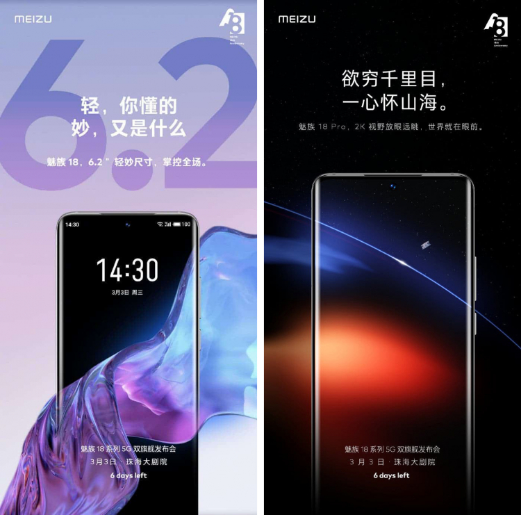

Компанія Meizu опублікувала зображення нових флагманів Meizu 18 і Meizu 18 Pro. Обидві моделі отримали
дисплеї діагоналлю 6,2 дюйма.
Екран новинок загинається за край корпусу пристрою. Базова модель отримала підтримку Full HD +, а модель
Pro підтримку 2К розширення. Фронтальна камера розташувалася у верхній частині дисплея, вона буде
одномодульною. Основна камера отримала 4 модуля, розширення головного датчика складе 48 Мп.